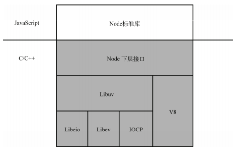

Node.js 用异步式 I/O 和事件驱动代替多线程，带来了可观的性能提升。Node.js 除了使 用 V8 作为JavaScript引擎以外，还使用了高效的 libev 和 libeio 库支持事件驱动和异步式 I/O 。 图1-2 是 Node.js 架构的示意图。
Node.js 的开发者在 libev 和 libeio 的基础上还抽象出了层 libuv 。对于 POSIX 操作系统， libuv 通过封装 libev 和 libeio 来利用 epoll 或 kqueue。而在 Windows 下，libuv 使用了 Windows 的 IOCP （Input/Output Completion Port，输入输出完成端口）机制，以在不同平台下实现同 样的高性能。
图1-2 Node.js 的架构
Snoopyxd 详细对比了 Node.js 与 PHP+Nginx 组合，结果显示在3000并发连接、30秒的 测试下，输出“hello world ”请求：